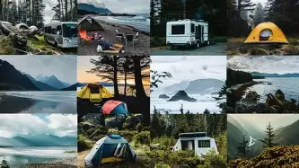

...Types Of Camping...
Different types of camping may be named after their form of transportation, such as canoe camping, car camping, RVing, and backpacking, including ultralight backpacking.
Camping is also labeled by lifestyle: Glamping (glamorous camping) combines camping with the luxury and amenities of a home or hotel,[11] and has its roots in the early 1900s European and American safaris in Africa. Workamping allows campers to trade their labor variously for discounts on campsite fees, campground utilities, and even some degree of pay. Migrant camps are formed not for recreation but as a temporary housing arrangement. Campgrounds for custom harvesters in the United States may include room-to-park combines and other large farm equipment. Camping is also popular at air shows, notably at the Oshkosh air show where people often camp in a small tent under their aircraft's wing.
...Religious camping...
In Evangelical Christianity, camping for a spiritual retreat was encouraged by the development of camp meetings in the 19th century, to promote spiritual renewal, far from the city and in nature.[13] These camps were an opportunity to pray, sing and listen to sermons for several days. Various evangelical associations have also established campgrounds or conference centers in isolated locations, which provide retreat times for children and adults.
